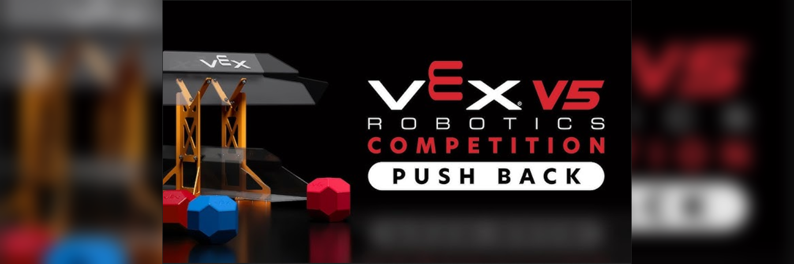

Project
Design and build a robot to meet the objectives of the VEX 2025–2026 competition, where the robot would have to collect and deposit 18-sided blocks in different field targets; the robot had to be controlled by remote control.
The robot was designed considering the requirements of the season challenge. The mechanical system was built, motors and control electronics were integrated, and the operating program was developed. The robot executed the correct functions to meet the competition objective.
Participation in design, robot construction, electronics integration, and functional testing.
The robot fulfilled the required functions, meeting the challenge objective.